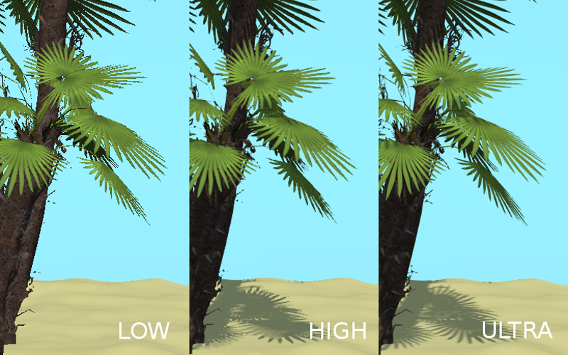

Разработчикам приложений¶
Hello world!¶
Простейшее приложение на основе Blend4Web может иметь вид:
<!DOCTYPE html>
<html>
<head>
<script src="b4w.min.js"></script>
<script>
function hello() {
var m_version = b4w.require("version");
document.body.innerHTML = "Hello, Blend4Web " + m_version.version() + "!";
}
</script>
</head>
<body onload="hello()"></body>
</html>
Базовый код движка подключается с помощью тега <script src="...">. Далее, приложение ожидает окончания загрузки страницы и выводит сообщение с текущей версией в окне браузера. В данном примере используется единственный модуль version, в котором находится одноимённая функция version(). Подробную информацию о предназначении модулей и функций движка можно найти в документации по API.
Файлы со скомпилированным кодом движка находятся в директории SDK deploy/apps/common. Файл b4w.min.js содержит в себе базовую версию, в случае необходимости использования аддонов, вместо него используется b4w.full.min.js.
Загрузка сцены в приложение¶
Для того, чтобы загрузить трёхмерную сцену, требуется выполнить следующую последовательность действий:
- Разместить на странице элемент <canvas>, на котором будет производиться рендеринг.
- После загрузки страницы, для инициализации контекста WebGL, вызвать функцию m_main.init() с идентификатором созданного элемента.
- Вызвать функцию m_data.load() для загрузки трёхмерной сцены.
<!DOCTYPE html>
<html>
<head>
<script src="b4w.min.js"></script>
<script>
function hello() {
var m_main = b4w.require("main");
var m_data = b4w.require("data");
var canvas_elem = document.getElementById("canvas_id");
m_main.init(canvas_elem);
m_data.load("some_scene.json");
}
</script>
</head>
<body onload="hello()"><canvas id="canvas_id"></canvas></body>
</html>
Следует отметить, что реальное приложение должно включать в себя проверку ошибок, настройку движка перед инициализацией, а также базовую систему взаимодействия с пользователем.
Быстрое создание приложений¶
Поскольку создание приложения с нуля может быть достаточно сложной операцей, особенно для начинающих пользователей, в движке существует специальное дополнение app:
<!DOCTYPE html>
<html>
<head>
<script src="b4w.full.min.js"></script>
<script>
var m_app = b4w.require("app");
var m_data = b4w.require("data");
m_app.init({
canvas_container_id: "body_id",
callback: load_cb
});
function load_cb() {
m_data.load("some_scene.json");
}
</script>
</head>
<body id="body_id"></body>
</html>
В данном случае модуль app создаст элемент <canvas> внутри контейнера с указанным идентификатором body_id, осуществит инициализацию движка при загрузке страницы и сообщит о её окончании с помощью обработчика load_cb.
Разработка приложений в составе SDK¶
В составе SDK присутствует скрипт apps_dev/project.py, предназначенный для сборки приложений.
Пример:
./project.py -a my_app_path -o advanced -b copy -v 15.02 -s my_resources_path
- Опция "-a" указывает на имя директории, в которой находится приложение.
- Опция "-o" (необязательная) используется для указания метода оптимизации js-файлов. Доступные варианты: whitespace, simple (по умолчанию) и advanced.
- Опция "-b" (необязательная) указывает из какой директории брать движок. Доступные варианты: link (по умолчанию) - движок подключается из директории deploy/apps/common/, copy - движок копируется в директорию с собранным приложением, combine - движок объединяется с минимизированным скриптом в корне приложения, compile - необходимые модули движка компилируются вместе со скриптами приложения.
- Опция "-d" (необязательная) указывает в какой директории размещать скомпилированное приложение.
- Опция "-s" (необязательная) указывает из какой директории брать ресурсы для сцены.
- Опция "-p" (необязательная) указывает в какой директории будут располагаться ресурсы для сцены относительно корня приложения.
- Опция "-v" (необязательная) добавляет к скриптам и стилям версию. Это делается для того, чтобы браузер не брал из кэша старые скрипты и стили.
Структура приложения:
- В корне директории должен находится единственный html-файл.
- Скрипты и стили могут находиться как в корне приложения, так и во вложенных папках.
Описание работы сборщика приложений:
- Приложение полностью копируется в директорию deploy/apps/app_name/.
- Если указана опция ‘-d’, приложение копируется в соответствующую директорию.
- Скрипты и стили компилируются относительно родительской директории.
Конвертация ресурсов¶
Существующие браузеры не полностью поддерживают основные форматы медиаданных, поэтому для создания кроссбраузерных приложений, а также с целью оптимизации, необходимо использовать конвертер ресурсов. Преобразование происходит по схеме:
- для аудио (convert_media):
- ogg -> mp4
- mp3 -> ogg
- mp4 -> ogg
- для видео (convert_media):
- ogv -> webm
- m4v -> webm
- webm -> m4v
- ogv -> seq
- m4v -> seq
- webm -> seq
Пример файла на входе: file_name.webm, пример файла на выходе: file_name.altconv.m4v
- для изображений (convert_dds):
- png -> dds
- jpg -> dds
Пример файла на входе: file_name.jpg, пример файла на выходе: file_name.jpg.dds
В целях оптимизации работы приложения существует возможность использования min50 и dds текстур. Для этого при инициализации приложения необходимо передать следующие параметры:
exports.init = function() {
m_app.init({
// . . .
assets_dds_available: true,
assets_min50_available: true,
// . . .
});
// . . .
}
Файл формата .seq представляет собой раскадрированное видео. Применяется на IE 11 и iPhone, поскольку на них возникают трудности при использовании видео стандартного формата в качестве текстуры. Использование dds-формата для изображений является более оптимальным по сравнению с другими форматами.
В состав дистрибутива включен Python скрипт (scripts/converter.py) для конвертации исходных файлов в другие форматы с целью расширения спектра поддерживаемых платформ, а также для уменьшения размера ресурсов. Для конвертации необходимо выполнить команду:
> ./converter.py [-d file_path] resize_textures | convert_dds | convert_media
С помощью опции -d можно указать путь к директории, в которой будет производится конвертация.
Аргумент resize_textures используется для изменения размера текстур в режиме LOW.
Движком могут использоваться файлы, созданные пользователем вручную и имеющие следующие наименования: file_name.altconv.m4v, file_name.altconv.mp3 и т.д. Такие файлы необходимо размещать в одной директории с медиафайлом, используемым в Blender’e.
Вы также можете использовать бесплатную кроссплатформенную программу Miro Video Converter для конвертации медиаданных.
Система модулей¶
Несмотря на то, что движок предоставляет прикладному программисту API в объёме десятков модулей, в процессе работы он занимает в глобальном пространстве имён единственный объект b4w. При необходимости обращения к модулю, последний импортируется с помощью вызова функции b4w.require.
Допустима регистрация сторонних модулей, если их имена не пересекаются с имеющимися. Регистрация происходит посредством вызова b4w.register. Проверка наличия модуля с некоторым именем может быть осуществлена с помощью b4w.module_check.
Пример:
// check if module exists
if (b4w.module_check("my_module"))
throw "Failed to register module: my_module";
// register my_module
b4w.register("my_module", function(exports, require) {
// import module "version"
var m_version = require("version");
// export print_build_date() from module "my_module"
exports.print_build_date = function() {
// exec function date() from module "version"
console.log("Engine build date: " + m_version.date());
}
});
// import module "my_module"
var m_my_module = b4w.require("my_module");
// exec function print_build_date() from module "my_module"
m_my_module.print_build_date();
Управление перемещением объектов¶
Примечание
Необходимо обеспечить, чтобы объект, над которым выполняется преобразование, был динамическим.
Для управления перемещением объектов в движке предусмотрены следующие базовые функции модуля transform:
- get_translation
- Получить координаты центра объекта. Вариант с одним параметром возвращает новый вектор (неоптимизированный вариант), вариант с двумя требует отдельного вектора для записи результата.
- get_rotation
- Получить кватернион поворота объекта. По аналогии с get_translation имеется два варианта вызова функции.
- get_scale
- Получить значение коэффициента увеличения объекта.
- set_translation, set_translation_v
- Переместить центр объекта в указанное место. Первая функция принимает в качестве параметров отдельные координаты, вторая - трёхмерный вектор (Array или Float32Array).
- set_rotation, set_rotation_v
- Установить кватернион поворота объекта. Первая функция принимает в качестве параметров отдельные координаты, вторая - четырёхмерный вектор (Array или Float32Array).
- set_scale
- Установить коэффициент увеличения объекта. Единица соответствует исходному состоянию. Значение меньше единицы - уменьшение. Значение больше единицы - увеличение. Не все объекты могут быть увеличены. В частности, увеличение невозможно для физических объектов.
- set_rotation_euler, set_rotation_euler_v
- Установить поворот объекта с помощью углов Эйлера. Используется внутренняя (intrinsic) система поворота YZX (то есть углы следуют в последовательности YZX, сама система отсчёта при этом вращается и занимает каждый раз новое положение).
Кватернионы¶
Кватернионы представляют собой четырёхмерные векторы, используемые для осуществления поворотов. Использование кватернионов обладает рядом преимуществ перед другими способами представления поворотов:
- Не имеет неоднозначности и зависимости от порядка применения поворотов, которые имеют место в случае использования углов Эйлера.
- Более эффективное использование памяти (от 2-х до 4-х раз меньше в зависимости от типа используемой матрицы).
- Высокая эффективность вычисления серии поворотов, чем при использовании матриц.
- Нейтрализация ошибок умножения, возникающих вследствие неточности чисел с плавающей запятой.
- Удобный метод интерполяции.
- Кватернионы имеют ряд недостатков:
- Поворот вектора с помощью кватерниона более сложная в вычислительном плане операция чем поворот с использованием матрицы.
- Использование кватернионов для представления отличных от поворота преобразований (перспективная или ортогональная проекция) затруднено.
Для удобства работы с кватернионами в движке имеется ряд функций:
- quat.multiply
- Умножение кватернионов. Умножение кватерниона А на кватернион Б слева A*Б является поворотом на A. То есть у объекта уже имеется некий поворот Б, который мы дополняем новым поворотом на A.
- quat.setAxisAngle
- Кватернион представляет собой иную форму записи поворота относительно произвольной оси (вектора) на произвольный угол. Положительное направление поворота отсчитывается против часовой стрелки, если смотреть с конца вектора. Например вызов quat.setAxisAngle([1,0,0], Math.PI/3, quat) сформирует кватернион, который может быть использован для осуществления поворота относительно оси X на 60 градусов (против часовой стрелки, если смотреть с конца оси X).
- quat.slerp
- Сферическая интерполяция кватернионов. Используется для осуществления плавного разворота объектов и анимации.
- util.euler_to_quat, util.quat_to_euler.
- Преобразование из углов Эйлера и наоборот.
Пример работы с кватернионами¶
Требуется повернуть объект на 60 градусов в горизонтальной плоскости вправо. В программе Blender имеется соответствующая модель с названием “Cessna”.

Сохраним ссылку на объект в движке в переменной aircraft:
var aircraft = m_scenes.get_object_by_name("Cessna");
Осуществим поворот:
- Расположение координатных осей в Blender’е и в движке различается, и при экспорте произойдет преобразование: [X Y Z] (Blender) -> [X -Z Y] (движок). Поэтому поворот нужно осуществлять относительно оси Y, а не Z.
- Повороту вправо соответствует поворот по часовой стрелке, т.е. в отрицательном направлении.
- 60 градусов = \(\pi/3\) радиан.
В итоге получаем:
// compose quaternion
var quat_60_Y_neg = m_quat.setAxisAngle([0, 1, 0], -Math.PI/3, m_quat.create());
// get old rotation
var quat_old = m_transform.get_rotation(aircraft);
// left multiply: quat60_Y_neg * quat_old
var quat_new = m_quat.multiply(quat_60_Y_neg, quat_old, m_quat.create());
// set new rotation
m_transform.set_rotation_v(aircraft, quat_new);
Оптимизированный вариант, не приводящий к созданию новых объектов:
// cache arrays as global vars
var AXIS_Y = new Float32Array([0, 1, 0])
var quat_tmp = new Float32Array(4);
var quat_tmp2 = new Float32Array(4);
...
// rotate
m_quat.setAxisAngle(AXIS_Y, -Math.PI/3, quat_tmp);
m_transform.get_rotation(aircraft, quat_tmp2);
m_quat.multiply(quat_tmp, quat_tmp2, quat_tmp);
m_transform.set_rotation_v(aircraft, quat_tmp);
Событийная модель¶
Событийная модель предоставляет унифицированный интерфейс для описания изменения состояний 3D сцены, упрощая обработку событий физики и действий пользователя.
Сенсоры¶
Основным блоком событийной модели является сенсор (sensor). Сенсор является программной сущностью, и может быть только активным (1, единица) или неактивным (0, ноль). Некоторые сенсоры несут полезную нагрузку (payload). Например, сенсор трассировки лучей (Ray Sensor) предоставляет относительную длину луча пересечения.
Управление сенсорами не доступно пользователю в виде открытого API. Вместо этого каждый сенсор должен присутствовать в одном или нескольких множествах (sensor manifold). Множество является логическим контейнером, ассоциированным с объектом на сцене. Оно генерирует ответ на определенный набор событий сенсоров в виде вызова функции-обработчика. Для определения множества необходимо иметь следующую информацию (см. также описание функции controls.create_sensor_manifold() в документации по API):
Объект-носитель множества (например, бросаемый объект).
Уникальный идентификатор множества (например, “IMPACT”).
Тип вызова функции-обработчика (варианты: CT_CONTINUOUS - непрерывный,
CT_LEVEL - уровень, CT_SHOT - одномоментный, CT_TRIGGER - переключающий).
Массив сенсоров.
Логическая функция, определяющая при какой комбинации состояний сенсоров вызывается функция-обработчик.
Функция-обработчик.
Необязательный параметр, который может быть передан в функцию-обработчик.
Пример¶
Поставлена задача озвучить удар бросаемого камня так, чтобы при ударе о различные среды (например, земля и стена) выводился характерный звук. На сцене в Blender’е имеются ограничивающие меши с физическими материалами, их идентификаторы “TERRAIN” и “WALL”. На сцене также присутствует бросаемый физический объект с названием “Stone”.
Определим по одному сенсору соударения (Collision Sensor) для каждой среды, по типу издаваемого звука.
// import the modules
var m_scenes = b4w.require("scenes");
var m_controls = b4w.require("controls");
// get the object being thrown
var stone = m_scenes.get_object_by_name("Stone");
// create the sensors
var sensor_impact_terrain = m_controls.create_collision_sensor(stone, "TERRAIN");
var sensor_impact_wall = m_controls.create_collision_sensor(stone, "WALL");
Добавим сенсоры в массив. В качестве логической функции используем логическое ИЛИ. В обработчике напишем код для воспроизведения звука. Создадим множество сенсоров с идентификатором “IMPACT” и типом CT_SHOT (одномоментный).
// array of the sensors
var impact_sens_array = [sensor_impact_terrain, sensor_impact_wall];
// manifold logic function
var impact_sens_logic = function(s) {return (s[0] || s[1])};
// callback
var impact_cb = function(obj, manifold_id, pulse) {
// NOTE: it's possible to play both sounds simultaneously
if (m_controls.get_sensor_value(obj, manifold_id, 0) == 1) {
// ...
console.log("play the terrain impact sound");
}
if (m_controls.get_sensor_value(obj, manifold_id, 1) == 1) {
// ...
console.log("play the wall impact sound");
}
}
// create the manifold
m_controls.create_sensor_manifold(stone, "IMPACT", m_ctl.CT_SHOT,
impact_sens_array, impact_sens_logic, impact_cb);
При столкновении объекта “Stone” с любым из физических материалов “TERRAIN” или “WALL” происходит вызов функции-обработчика. Внутри этой функции получим значения обоих сенсоров по их индексу в массиве сенсоров (0 - “TERRAIN”, 1 - “WALL”). Значение сенсора = 1 (активный) означает, что произошло столкновение с соответствующим физическим материалом. В результате воспроизводится соответствующий звук (код не показан).
Профили качества изображения¶
Для поддержки различных по функциональности платформ в движке реализовано несколько профилей качества изображения:

- низкое качество (P_LOW) - отключен ряд функций (тени, динамическое отражение, постпроцессинг), размер текстур для сборочной версии уменьшен вдвое, антиалиасинг отключен
- высокое качество (P_HIGH) - используются все запрошенные сценой функции, метод антиалиасинга FXAA
- максимальное качество (P_ULTRA) - вдвое увеличено разрешение рендеринга, увеличено разрешение карт теней, метод антиалиасинга SMAA
{kind=link}
Переключение профилей качества осуществляется программно, до инициализации контекста WebGL. Профиль по умолчанию P_HIGH.
var m_cfg = b4w.require("config");
var m_main = b4w.require("main");
m_cfg.set("quality", m_cfg.P_LOW);
m_main.init(...);
Разработчики приложений могут также установить параметр quality при инициализации движка с использованием дополнения app.js:
var m_cfg = b4w.require("config");
var m_app = b4w.require("app");
m_app.init({
canvas_container_id: "body_id",
quality: m_cfg.P_HIGH
});
Файловая структура SDK¶
- apps_dev
исходный код приложений (не все приложения доступны в бесплатной версии)
- Makefile
- файл для сборки всех приложений из состава SDK
- project.py
- скрипт для разработчиков приложений
- viewer
исходные файлы приложения для просмотра сцен Viewer
- assets.json
- метаданные с информацией о сценах, загружаемых просмотрщиком сцен Viewer
- csrc
- исходный код бинарной части экспортера движка и других утилит на языке C
- doc_src
- исходный код настоящего руководства пользователя на языке разметки reST
- blender
- исходные файлы сцен в формате Blender (не все сцены доступны в бесплатной версии)
- blender_scripts
- экспортер и вспомогательные скрипты для Blender’а
- deploy
директория с ресурсами для размещения на сервере (исходные файлы сцен, скомпилированные приложения и документация)
- api_doc
- документация API движка для разработчиков (собирается автоматически, на основе исходного кода движка)
- apps
3D-приложения, предназначенные для развертывания, директория дублирует apps_dev
- common
- Файлы скомпилированного движка. Используются приложениями из состава SDK (отсюда и название).
- assets
- загружаемые ресурсы: сцены, текстуры, звуковые файлы
- doc
- настоящее руководство пользователя в формате HTML, собирается автоматически из doc_src
- globals_detect
- вспомогательный код для определения глобальных переменных
- tutorials
- исходные файлы обучающих примеров
- index.html и index_assets
- файлы главной веб-страницы SDK
- license
- файлы с текстами лицензионных соглашений
- Makefile
- файл сборки для компиляции движка, приложений, документации, развертывания на удаленном сервере (недоступен в бесплатной версии)
- README.rst
- файл README
- scripts
дополнительные скрипты
- chrome_debug.sh
- скрипт, запускающий браузер Chrome в режиме отладки
- compile_b4w.py
- скрипт для сборки кода движка и приложений
- converter.py
- скрипт, осуществляющий: уменьшение разрешения текстур вдвое, компрессию текстур в формат DDS, конвертацию звуковых файлов в форматы mp4 и ogg
- custom_json_encoder.py
- форк Python-модуля json, сортирует ключи по алфавиту в обратном порядке
- gen_glmatrix.sh
- скрипт для генерации математического модуля на основе исходных файлов из репозитория glMatrix 2
- graph.sh
- генератор текущего графа сцены в формате svg, используется для отладки рендеринга
- memory.sh
- скрипт для проверки обычной (RAM) и видео-памяти (VRAM)
- plot.sh
- построитель графиков отладочной информации
- reexporter.py
- скрипт для автоматического переэкспорта всех сцен из состава SDK
- remove_alpha_channel.sh
- скрипт для удаления альфа-канала изображения
- report_unused_resources.py
- скрипт для проверки и сообщения о неиспользуемых ресурсах (изображения и звуки, на которые ссылаются экспотируемые файлы)
- screencast.sh
- скрипт для записи видео с экрана
- shader_analyzer.py
- скрипт, запускающий локальный веб-сервер, который осуществляет подсчет сложности шейдеров
- shaders
- GLSL-шейдеры движка
- src
основной исходный код ядра движка
- addons
- исходный код дополнений движка
- ext
- исходный код внешних объявлений, формирующих API движка
- libs
- исходный код библиотек
- tools
Различные инструменты для сборки движка и приложений
- closure-compiler
- компилятор Google Closure, файлы исключений к нему, генераторы файлов исключений
- glsl
- compiler
- компилятор GLSL-шейдеров движка
- pegjs
- грамматики парсер-генератора PEG.js для реализации препроцессора GLSL, а также скрипт для генерации модулей парсеров из этих грамматик
- yuicompressor
- утилита для сжатия файлов CSS
- uranium
- исходный код и скрипты сборки физического движка Uranium (форк Bullet)
- VERSION
- содержит текущую версию движка
Текстура типа Canvas¶
Для работы с подобными текстурами используется модуль textures. Пример работы с ним описан ниже.
var m_tex = require("textures");
...
var ctx = m_tex.get_canvas_texture_context("canvas_id");
...
// operations with canvas context
...
m_tex.update_canvas_texture_context("canvas_id");
Для получения контекста используется функция get_canvas_texture_context(), куда передается идентификатор “canvas_id”, задаваемый пользователем в Blender. После преобразований с контекстом вызывается функция update_canvas_texture_context(), которая осуществляет визуализацию изменений элемента с идентификатором “canvas_id”.
Настройка браузера для загрузки локальных ресурсов¶
Начиная с версии 15.02, в состав Blend4Web SDK входит сервер разработки, решающий проблему загрузки локальных ресурсов. Тем не менее, приведенные ниже инструкции могут быть полезны разработчикам.
Рендерер движка является Web-приложением, и его работа происходит при просмотре HTML-файла в браузере. После инициализации происходит загрузка ресурсов (сцен, текстур), которая подчиняется правилу ограничения домена, запрещающему, в частности, загрузку из локальной директории. Простым способом обхода этого ограничения может быть настройка браузера для загрузки локальных ресурсов. Другой способ - использование локального web-сервера.
Настройка браузера для загрузки локальных ресурсов является простым и универсальным методом обойти ограничения безопасности. Однако использовать настроенный подобным образом браузер рекомендуется только для просмотра локального контента.
Chrome на Windows:
Правой кнопкой мыши нажать на ярлыке на рабочем столе, выбрать Свойства (Properties), после чего в поле для пути к исполняемому файлу добавить после пробела --allow-file-access-from-files. Нажать ОК.
{kind=link}
Для удобства можно предварительно создать копию ярлыка и изменить ее для локального просмотра, оставив оригинальную версию ярлыка для запуска браузера в обычном режиме.
Chrome на OS X:
Открыть Терминал и запустить браузер с параметром:
> /Applications/GoogleChrome.app/Contents/MacOS/GoogleChrome –allow-file-access-from-files
Chrome/Chromium на Linux:
Запустить браузер с параметром:
> google-chrome --allow-file-access-from-files
или:
> chromium-browser --allow-file-access-from-files
Firefox на Windows/Linux/OS X:
Ввести about:config в адресную строку браузера, найти параметр security.fileuri.strict_origin_policy и переключить его двойным щелчком мыши из true в false.
{kind=link}
Safari/OS X:
Включить в настройках отображение меню “Develop”, затем активировать опцию “Disable Local File Restrictions”.

Запуск локального сервера¶
При желании вместо имеющегося в составе SDK сервера разработки можно использовать собственный web-сервер. Наиболее простым решением является использование простого веб-сервера из стандартной библиотеки Python.
На Windows:
Загрузить и инсталлировать последнюю версию Python с официального сайта. В процессе установки выберите опцию добавления пути к исполняемому файлу (Add python.exe to Path).
Запустить командную строку (Command Prompt).
Выполнить команду в корневой директории SDK:
> python -m http.server
На Linux/OS X:
В случае отсутствия в дистрибутиве, загрузить и инсталлировать последнюю версию Python с официального сайта.
Запустить командную строку (Terminal).
Выполнить команду в корневой директории SDK:
> python3 -m http.server
После загрузки сервера, в любом браузере открыть корневую страницу с приложениями из состава SDK, расположенную по адресу http://localhost:8000.
В случае необходимости, можно указать порт дополнительным параметром:
> python3 -m http.server 8080